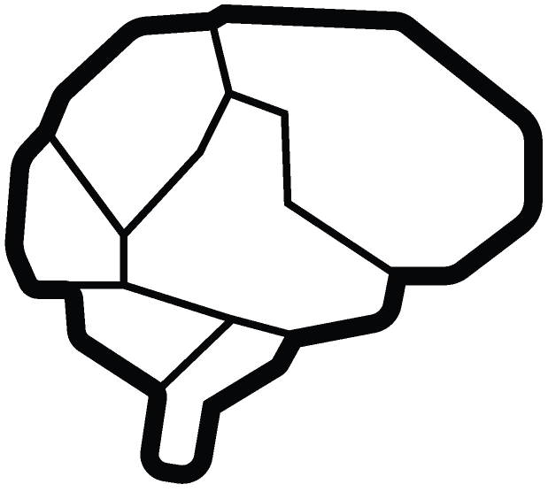

Sr. Applied Scientist | Amazon
Time: Jul 2025 - Present.
Applied Scientist II | Amazon
Time: Jun 2022 - Jun 2025.
Amazon
55 Pier 4 Boulevard
Boston, MA 02210
I am a Senior Applied Scientist at Amazon. I obtained my Ph.D. in Computer Science in 2022 from the John A. Paulson School of Engineering and Applied Sciences at Harvard University, advised by Prof. Hanspeter Pfister. I also worked closely with Prof. Jeff W. Lichtman. I obtained M.S. in Computer Science from Harvard University in 2020 and B.S. in Biological Science from Tsinghua University in 2017.
I am interested in deep learning, with applications in audio, computer vision, and neuroscience. My current work focuses on understanding speech and acoustic events. My previous research topics include semantic and instance segmentation, active learning, unsupervised learning, and the analysis of comprehensive neuron connectivity in microscopy images of animal brains. I am the author of  PyTorch Connectomics.
Sr. Applied Scientist | Amazon
Time: Jul 2025 - Present.
Applied Scientist II | Amazon
Time: Jun 2022 - Jun 2025.
Research Assistant | School of Engineering and Applied Sciences, Harvard University
Time: Aug 2017 - Jun 2022. Advisor: Prof. Hanspeter Pfister
Applied Scientist Intern | Amazon Web Services (AWS)
Time: May 2021 - Sep 2021. Mentor: Dr. Erhan Bas
Research Intern | Mitsubishi Electric Research Laboratories (MERL)
Time: May 2019 - Aug 2019. Mentor: Dr. Ziming Zhang
Multiplexed Volumetric CLEM enabled by scFvs Provides Insights into the Cytology of Cerebellar Cortex
Xiaomeng Han, Xiaotang Lu, Peter H Li, Shuohong Wang, Richard Schalek, Yaron Meirovitch, Zudi Lin, Jason Adhinarta,
Karl D Murray, Leah M MacNiven, Daniel R Berger, Yuelong Wu, Tao Fang, Elif Sevde Meral, Shadnan Asraf, Hidde Ploegh,
Hanspeter Pfister, Donglai Wei, Viren Jain, James S Trimmer, Jeff W. Lichtman
Nature Communications, 2024
[Paper]
[bioRxiv]
-
[Harvard Gazette]
A Petavoxel Fragment of Human Cerebral Cortex Reconstructed at Nanoscale Resolution
Alexander Shapson-Coe, Michał Januszewski, Daniel R Berger, Art Pope, Yuelong Wu, Tim Blakely, Richard L Schalek, Peter H Li,
Shuohong Wang, Jeremy Maitin-Shepard, Neha Karlupia, Sven Dorkenwald, Evelina Sjostedt, Laramie Leavitt, Dongil Lee, Jakob Troidl,
Forrest Collman, Luke Bailey, Angerica Fitzmaurice, Rohin Kar, Benjamin Field, Hank Wu, Julian Wagner-Carena, David Aley,
Joanna Lau, Zudi Lin, Donglai Wei, Hanspeter Pfister, Adi Peleg, Viren Jain, and Jeff W. Lichtman
Science, 2024
[Paper]
[Dataset]
-
[CNN]
[Nature]
[Google AI Blog]
[MIT Tech Review]
[Scientific American]

Dense 4D Nanoscale Reconstruction of Living Brain Tissue
Philipp Velicky, Eder Miguel, Julia M. Michalska, Julia Lyudchik, Donglai Wei,
Zudi Lin, Jake F. Watson, Jakob Troidl, Johanna Beyer, Yoav Ben-Simon, Christoph Sommer,
Wiebke Jahr, Alban Cenameri, Johannes Broichhagen, Seth G. N. Grant, Peter Jonas,
Gaia Novarino, Hanspeter Pfister, Bernd Bickel, and Johann G. Danzl
Nature Methods, 2023
[Paper]
[bioRxiv]
[Code]
-
[The Medical News]
[Bioengineer.org]
Current Progress and Challenges in Large-scale 3D Mitochondria Instance Segmentation
Daniel Franco-Barranco, Zudi Lin, Won-Dong Jang, Xueying Wang, Qijia Shen, Wenjie Yin, Yutian Fan,
Mingxing Li, Chang Chen, Zhiwei Xiong, Rui Xin, Hao Liu, Huai Chen, Zhili Li, Jie Zhao, Xuejin Chen, Constantin Pape,
Ryan Conrad, Jozefus De Folter, Luke Nightingale, Martin Jones, Yanling Liu, Dorsa Ziaei, Stephan Huschauer,
Ignacio Arganda-Carreras, Hanspeter Pfister, and Donglai Wei
IEEE Transactions on Medical Imaging (TMI), 2023
[Paper]
[TechRxiv]
[Code]
-
[Grand Challenge]
3D Domain Adaptive Instance Segmentation via Cyclic Segmentation GANs
Leander Lauenburg, Zudi Lin, Ruihan Zhang, Márcia dos Santos, Siyu Huang, Ignacio Arganda-Carreras,
Edward S. Boyden, Hanspeter Pfister, and Donglai Wei
IEEE Journal of Biomedical and Health Informatics (J-BHI), 2023
[Paper]
[arXiv]
[Project Page]
[Code]
Relaxing Contrastiveness in Multimodal Representation Learning
Zudi Lin, Erhan Bas, Kunwar Yashraj Singh, Gurumurthy Swaminathan, and Rahul Bhotika
Winter Conference on Applications of Computer Vision (WACV), 2023
[Paper]
[Amazon Science]
MST++: Multi-stage Spectral-wise Transformer for Efficient Spectral Reconstruction
Yuanhao Cai, Jing Lin, Zudi Lin, Haoqian Wang, Yulun Zhang, Hanspeter Pfister, Radu Timofte, and Luc Van Gool
Computer Vision and Pattern Recognition Workshops (CVPRW), 2022
[Paper]
[arXiv]
[Code]
-
[Challenge Paper]
Winner of NTIRE 2022 Challenge on Spectral Reconstruction
Texture-based Error Analysis for Image Super-Resolution
Salma Abdel Magid, Zudi Lin, Donglai Wei, Yulun Zhang, Jinjin Gu and Hanspeter Pfister
Computer Vision and Pattern Recognition (CVPR), 2022
[Paper]
YouMVOS: An Actor-centric Multi-shot Video Object Segmentation Dataset
Donglai Wei, Siddhant Kharbanda, Sarthak Arora, Roshan Roy, Nishant Jain, Akash Palrecha, Tanav
Shah, Shray Mathur, Abhijay Kemkar, Ritik Mathur, Anirudh Chakravarthy, Zudi Lin, Won-Dong
Jang, Yansong Tang, Song Bai, James Tompkin, Philip Torr and Hanspeter Pfister
Computer Vision and Pattern Recognition (CVPR), 2022
[Paper]
[Project Page]
PyTorch Connectomics: A Scalable and Flexible Segmentation Framework for EM Connectomics
Zudi Lin, Donglai Wei, Jeff Lichtman and Hanspeter Pfister
arXiv preprint arXiv:2112.05754, 2021
[arXiv]
[Code]
-
[Documentation]
NucMM Dataset: 3D Neuronal Nuclei Instance Segmentation at Sub-Cubic Millimeter Scale
Zudi Lin, Donglai Wei, Mariela D. Petkova, Yuelong Wu, Zergham Ahmed, Krishna Swaroop K, Silin
Zou, Nils Wendt, Jonathan Boulanger-Weill, Xueying Wang, Nagaraju Dhanyasi, Ignacio Arganda-Carreras,
Florian Engert, Jeff Lichtman and Hanspeter Pfister
Medical Image Computing and Computer Assisted Interventions (MICCAI), 2021
[Paper]
[arXiv]
[Code]
[Project Page]
Student Travel Award
AxonEM Dataset: 3D Axon Instance Segmentation of Brain Cortical Regions
Donglai Wei, Kisuk Lee, Hanyu Li, Ran Lu, J. Alexander Bae, Zequan Liu, Lifu Zhang, Márcia
dos Santos, Zudi Lin, Thomas Uram, Xueying Wang, Ignacio Arganda-Carreras, Brian Matejek,
Narayanan Kasthuri, Jeff Lichtman and Hanspeter Pfister
Medical Image Computing and Computer Assisted Interventions (MICCAI), 2021
[Paper]
[arXiv]
[Code]
[Project Page]
The Wood Image Analysis and Dataset (WIAD): Open-access Visual Analysis Tools to Advance the Ecological Data Revolution
Tim Rademacher, Bijan Seyednasrollah, David Basler, Jian Cheng, Tessa Mandra, Elise Miller, Zudi Lin,
David A Orwig, Neil Pederson, Hanspeter Pfister, Andrew D Richardson, Donglai Wei and Li Yao
Methods in Ecology and Evolution, 2021
[Paper]
[bioRxiv]
Two-Stream Active Query Suggestion for Active Learning in Connectomics
Zudi Lin, Donglai Wei, Won-Dong Jang, Siyan Zhou, Xupeng Chen, Xueying Wang, Richard Schalek, Daniel Berger, Adi Suissa-Peleg,
Brian Matejek, Lee Kamentsky, Toufiq Parag, Thouis Jones, Daniel Haehn, Jeff Lichtman and Hanspeter Pfister
European Conference on Computer Vision (ECCV), 2020
[Paper]
[Supp.]
[Code]
MitoEM Dataset: Large-scale 3D Mitochondria Instance Segmentation from EM Images
Donglai Wei, Zudi Lin, Daniel Barranco, Nils Wendt, Xingyu Liu, Wenjie Yin, Xin Huang, Aarush Gupta, Won-Dong Jang,
Xueying Wang, Ignacio Arganda-Carreras, Jeff Lichtman, Hanspeter Pfister
Medical Image Computing and Computer Assisted Interventions (MICCAI), 2020
[Paper]
[Code]
[Tutorial]
-
[Grand Challenge]